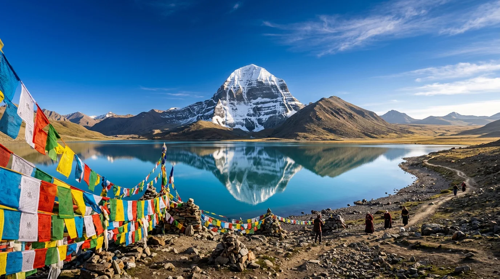
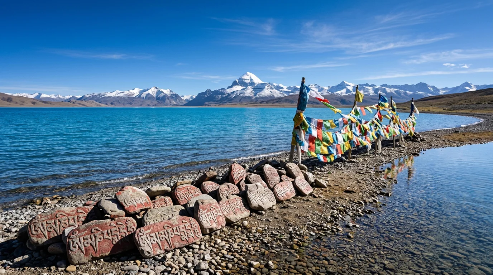
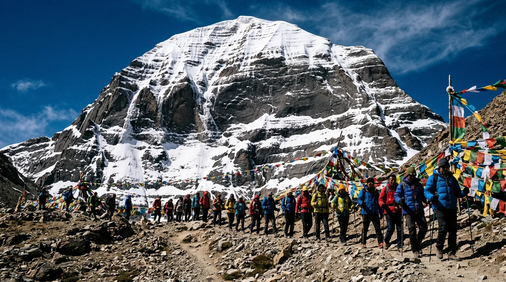
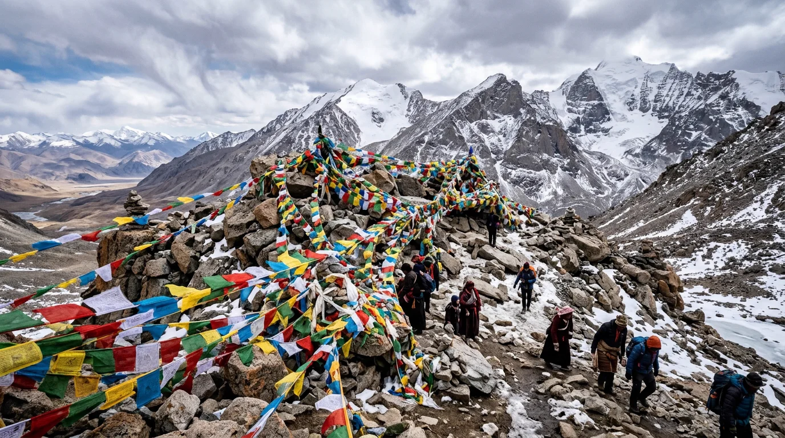
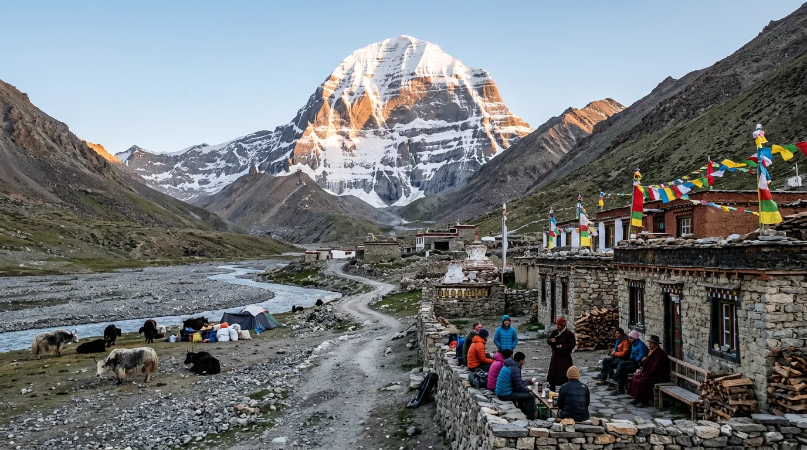

Kailash Mansarovar Yatra — 14 Days
Visit Lake Mansarovar and walk the Kailash Kora on our planned fourteen-day overland pilgrimage from Kathmandu. The route links Timure, Kyirong and Saga with the lake and Darchen, followed by three walking stages around Mount Kailash.





Key Trip Facts
14-Day Kailash Mansarovar Yatra Overview
Our Kailash Mansarovar Yatra connects Kathmandu with western Tibet by road, followed by the walking circuit around Mount Kailash. You visit Lake Mansarovar, spend time at its shore and continue to Darchen before beginning the Kora. The programme includes arrival, sightseeing, a Saga acclimatisation day, the return journey and departure from Kathmandu after fourteen days.
The approach begins with Kathmandu sightseeing before driving to Timure near Rasuwagadhi. When access and documents are approved, you cross into Tibet and continue to Kyirong. From there, the road climbs towards Saga on the Tibetan plateau. Two nights in Saga include a day for rest and activity before continuing to Mansarovar. This sequence involves a substantial altitude gain that needs individual assessment before the journey is confirmed.
Lake Mansarovar and Mount Kailash hold religious significance for Hindus, Buddhists, Jains and Bön followers. The lakeside programme allows prayer and permitted rituals, with puja arrangements included. Participation follows local rules and your beliefs. You then travel to Darchen, the base for the walking circuit, and prepare your clothing and day bag for the Kora.
The Kora follows the route from Yamadwar to Diraphuk, over Dolma La to Zuthulphuk, then back towards the road. Cold, uneven ground and the high pass make these walking days demanding. You need suitable fitness, medical preparation and flexibility if health or conditions require a change. The programme is a pilgrimage circuit around Kailash; climbing the mountain is not included.
Private transport, Kathmandu hotels, en-route guesthouses and Tibet meals are included. Confirm visa eligibility, room sharing, the Nepal meal plan and equipment arrangements before booking the planned journey.
14-Day Kailash Mansarovar Yatra Highlights
Why Book the 14-Day Kailash Mansarovar Yatra with Igloo Himalaya Treks?
We combine the lake visit and Kora with guides, road transport and practical preparation, subject to access and official approvals.
Yatra Briefing and Equipment Check
Discuss the route, walking demands and altitude before departure. Your briefing covers equipment and documents, helping you prepare for the lake visit, border crossing and three-day Kailash walking circuit.
Nepali and Tibetan Guides
Nepali and Tibetan Guides Nepali and Tibetan guides accompany travel, with a support crew listed in the package. Confirm staff roles and communication arrangements, especially during border formalities, road days and the high Kora stages.
Equipment Provided for the Yatra
Equipment Provided for the Yatra Your package provides a down jacket, duffel bag, trekking poles and rain poncho. Check sizes, condition and collection before departure. Confirm equipment use, return terms and any additional gear you need.
Communication When Plans Change
Communication When Plans Change Border restrictions, permits, weather and health can change the programme. We discuss the arrangements and extra costs before proceeding, with departure dependent on confirmed access rather than an assumed reopening or approval.
Day 1: Arrival in Kathmandu
Arrival in Kathmandu — 1,400 m / 4,593 ft — Private Airport Transfer & Hotel Check-in
Arrive at Tribhuvan International Airport, where your arranged private transfer takes you to your Kathmandu hotel. Settle in after the journey and keep your passport, booking details and any documents requested for the Yatra available for checking.
Depending on arrival time, rest at the hotel or take a short walk nearby. Confirm the sightseeing plan and briefing arrangements, and raise questions about equipment, health preparation or documents before departure.
Day 2: Kathmandu Sightseeing
Kathmandu Sightseeing — 1,400 m / 4,593 ft — Pashupatinath, Budhanilkantha & Boudhanath
Visit Pashupatinath, Budhanilkantha and Boudhanath on the Kathmandu sightseeing programme, using private road connections between the sites. Walking visits allow time to learn about the sites and their religious traditions.
Follow local instructions on entry, footwear and photography. Pashupatinath’s main temple is restricted to Hindus; other visitors use permitted areas. Later, review equipment and Tibet arrangements with the team. This sightseeing day does not guarantee that visa or permit processing can be completed after arrival. Approvals must be ready before you leave for the border.
Day 3: Drive from Kathmandu to Timure
Drive to Timure — 1,750 m / 5,741 ft — Approx. 145 km / 8–9 hrs Scenic Overland Drive
When the road and border arrangements are confirmed, leave Kathmandu for Timure. The route heads north along the Trishuli corridor towards the Nepal–Tibet crossing at Rasuwagadhi near Timure.
Allow the day for road travel, with timing affected by traffic, repairs and local conditions. Keep water, snacks and medicines accessible during the drive. Timure is the planned overnight stop before the border crossing. Check the next day’s meeting time, document requirements and luggage arrangements with the team before settling into the guesthouse for the night.
Day 4: Cross the Border and Drive to Kyirong
Cross Border to Kyirong — 2,700 m / 8,858 ft — Rasuwagadhi Immigration & Approx. 35 km Drive
Complete Nepal exit and Chinese entry formalities at the crossing. Once cleared, meet the Tibetan team and continue by road to Kyirong, keeping passports and permits available for checks as directed by your guides.
Border checks and vehicle changes can take time, so the schedule remains flexible. Kyirong is the first overnight stop in Tibet. Rest after arrival, prepare warmer clothing for the onward journey and tell the team about any illness before continuing higher tomorrow.
Day 5: Drive from Kyirong to Saga / New Dongba
Drive to Saga / New Dongba — 4,600 m / 15,092 ft — Approx. 260 km / 6–7 hrs Plateau Drive (+1,900m Gain)
Leave Kyirong for the higher Tibetan plateau. Saga is the overnight base for the following acclimatisation day; New Dongba remains an alternative only if the overnight and rest-day arrangements are agreed.
This stage brings a large increase in altitude, despite travelling by vehicle. Watch how you feel and tell your guide about headaches, nausea or unusual fatigue. Keep activity gentle on arrival. The next day in Saga provides time at the same height, but does not guarantee protection from altitude illness.
Day 6: Acclimatisation in Saga
Acclimatisation in Saga — 4,600 m / 15,092 ft — Rest, Hydration & Gentle Adjustment Day
Spend another night in Saga, with the day reserved for rest and adjustment to altitude. A short, gentle walk may suit you if well, with activity guided by how you feel and the team’s advice.
Avoid treating the rest day as a fitness test. Eat regularly, carry safe drinking water and keep warm. Health monitoring is listed in the package, but symptoms still need attention. If you feel unwell, discuss medical assessment and onward plans before travelling towards Mansarovar.
Day 7: Drive from Saga to Lake Mansarovar
Drive to Lake Mansarovar — 4,590 m / 15,059 ft — Approx. 450 km / 8–9 hrs Across Tibetan Plateau
Continue by road towards Lake Mansarovar, allowing the full day for travel across the plateau. The approach includes high roads before reaching the lake area, where the planned accommodation is a guesthouse near the shore.
After arrival, settle in and keep any lakeside walk comfortable. Views depend on cloud and local conditions. The following morning allows time for prayer and permitted rituals, so use the evening to rest and prepare warmer clothing for the lakeshore.
Day 8: Lakeside Rituals and Drive to Darchen
Lakeside Rituals to Darchen — 4,575 m / 15,010 ft — Puja at Mansarovar & Approx. 45 km Drive to Base
Spend the morning beside Mansarovar for quiet personal prayer and puja where permitted. Follow the guide’s instructions and local restrictions. A lakeside ritual does not require entering the water or undertaking any activity beyond your comfort or health.
Afterwards, drive to Darchen and prepare for the Kora. Check walking footwear, warm layers, water and the bag you will carry. If you want porter or horse assistance, confirm availability, limits and cost beforehand; neither is included in the package.
Day 9: Drive to Yamadwar and Walk to Diraphuk
Yamadwar to Diraphuk — 4,900 m / 16,076 ft — First Kora Walking Stage (Approx. 12 km / 5–6 hrs)
Take the vehicle connection from Darchen to Yamadwar, then begin the first Kora walking stage towards Diraphuk. Keep a steady pace and allow time for breaks during the ascent.
The path follows the Lha Chu Valley, with views towards Kailash when conditions allow. Follow the route and respect prayer sites and pilgrims. Cold, wind and altitude can make walking feel harder than the distance suggests.
Reach your guesthouse at Diraphuk and rest before the pass day. Prepare water, snacks, warm clothing and headtorch, and discuss how you are feeling with the team.
Day 10: Cross Dolma La Pass and Walk to Zuthulphuk
Cross Dolma La Pass to Zuthulphuk — 4,800 m / 15,748 ft — Dolma La (5,630 m) Crossing — Approx. 22 km / 8–9 hrs
Start early for the hardest walking day. Climb from Diraphuk towards Dolma La, approximately 5,630 m / 18,471 ft, then descend towards Zuthulphuk. The route includes steep and uneven ground, with snow or ice possible even during the pilgrimage season.
Walk carefully on the descent and follow the guide’s instructions. This stage requires stamina and balance at altitude. Do not continue higher with symptoms of altitude illness. The team must assess conditions and your health before the crossing; reaching the pass cannot be guaranteed.
Day 11: Finish the Kora and Drive to Saga
Finish Kora & Drive to Saga — 4,600 m / 15,092 ft — Walk Approx. 8 km / 3 hrs & Drive Approx. 7–8 hrs
Complete the final section from Zuthulphuk to the collection point, then rejoin transport. The day combines the Kora finish with a long onward drive towards Saga after the walk.
Exact walking endpoints depend on vehicle access, so confirm the collection point. Keep essentials separate from any stored luggage. After the walking circuit, return across the plateau to Saga for the night. Road conditions and the time needed to finish walking determine the arrival time and breaks along the route.
Day 12: Drive from Saga to Kyirong
Drive from Saga to Kyirong — 2,700 m / 8,858 ft — Approx. 260 km / 6–7 hrs Plateau Descent
Leave Saga and retrace the road towards Kyirong, descending from the higher plateau. The day is spent in the vehicle, with breaks according to the route, weather and local access conditions.
Keep documents accessible for checks on the way. Lower sleeping altitude may feel comfortable, but report any continuing symptoms rather than assuming the drive has resolved them. Kyirong is the planned overnight stop in Tibet. Check the next morning’s border arrangements and prepare your bags for the return to Nepal.
Day 13: Cross the Border and Return to Kathmandu
Cross Border to Kathmandu — 1,400 m / 4,593 ft — Rasuwagadhi Border Formalities & Full Travel Day
Travel to the approved border crossing and complete the return formalities before continuing to Kathmandu. Allow the full day for the crossing, road journey and delays en route.
After reaching Kathmandu, return to your hotel and rest after the journey. Arrival depends on road access and immigration procedures, so avoid a tight onward connection that evening. Check your departure transfer arrangements and keep documents accessible for tomorrow.
Day 14: Departure from Kathmandu
Departure from Kathmandu — 1,400 m / 4,593 ft — Private Airport Transfer & Farewell
Your fourteen-day Kailash Mansarovar Yatra ends in Kathmandu today. Prepare for your onward flight and allow enough time for the airport transfer and check-in. Additional hotel nights or changed travel arrangements need confirmation before departure.
Your private transfer takes you to Tribhuvan International Airport for departure.
What's Included & What's Excluded
What's Included in the 14-Day Yatra
-
Kathmandu accommodation: Hotel stays before the journey and after returning to Nepal.
-
En-route accommodation: Guesthouses and hotels at the planned overnight stops, with room sharing and available facilities confirmed before departure.
-
Tibet meals: Breakfast, lunch and dinner in Tibet. Confirm the Nepal meal plan and any dietary needs before booking; bottled water and personal snacks are excluded.
-
Private transport: Road travel in Nepal and Tibet along the itinerary, including the Kathmandu airport transfers described in the programme. Confirm vehicle arrangements, luggage capacity and transport changes before departure.
-
Travel paperwork: Tibet Travel Permit and applicable Chinese Group Visa, subject to confirmed passport eligibility.
-
Guides and crew: Nepali and Tibetan guides with support crew described for the programme, with duties confirmed beforehand.
-
Health support: Oxygen cylinder, first-aid kit and health monitoring; these arrangements do not replace professional medical assessment, descent or personal insurance.
-
Equipment: Down jacket, duffel bag, trekking poles and rain poncho for travel.
-
Puja arrangements: Lakeside puja at Mansarovar, subject to rules and permissions.
-
Kathmandu briefing: Preparation discussion before the road journey, covering the planned route and arrangements.
What's Not Included in the 14-Day Yatra
-
International airfare: Flights to and from Nepal and any related personal international travel arrangements.
-
Personal insurance: Your travel policy and its excesses, including cover needed for high-altitude walking and travel.
-
Medical costs: Treatment, emergency evacuation and medical expenses; included equipment does not establish paid rescue coverage.
-
Horse and porter hire: Assistance during the Kora is an extra requiring discussion, local availability and a confirmed price.
-
Personal expenses: Laundry, phone calls, internet, shopping and other personal purchases, including additional accommodation services not specified in your quotation.
-
Water and snacks: Bottled drinking water, seasonal fruits and snacks bought for personal use.
-
Tips: Gratuities for guides, drivers and the crew members.
-
Personal equipment: Clothing and other items beyond listed provision.
-
Unlisted services: Activities, extra travel days or services outside the confirmed inclusion list, with additional charges agreed before arrangements change.
14-Day Kailash Mansarovar Yatra Dates and Availability
Group Departures
On Hold StatusKyirong overland departures are currently on hold. Enquire about future arrangements; any departure requires confirmed road access, border permission, approved documents and availability of the local services.
Private Yatra Dates
Custom ArrangementsFor private arrangements, share dates, nationalities and party size. Private transport does not remove permit conditions or establish that independent travel in Tibet is allowed.
Package Prices
Pricing PolicyWhat to Pack for the 14-Day Kailash Mansarovar Yatra
Pack for long road journeys, cold guesthouse nights and demanding walking at altitude. Keep documents, medicines, warm clothing and water in a day bag. Check the supplied equipment before departure and confirm arrangements for luggage during the Kora days.
Walking Equipment
Clothing
Provided Equipment
Toiletries and Hygiene
Electronics
Documents and Personal Items
Read Before You Book
Check current access, passport eligibility, document lead times and the high-altitude demands before booking. The programme includes long drives, simple overnight facilities and a challenging pass crossing requiring careful preparation and flexibility.
Kora Difficulty and Fitness
The road approach is followed by three Kora stages, including the steep climb and descent over Dolma La. Vehicle days can also be tiring. You need the ability to walk for several hours on uneven ground, carrying a day bag in cold and potentially snowy conditions.
Prepare with regular walking and hill walking. Previous mountain walking helps, but your medical suitability and response to altitude still need individual assessment.
Horse or porter assistance costs extra. Availability and the sections where assistance is possible require confirmation. Do not assume hiring an animal means you can ride every part or continue safely when unwell at altitude during the Kora.
Altitude and Acclimatisation
Kyirong to Saga gains roughly 1,900 m in height in one day. The Saga rest day follows that gain; it does not remove its risks or guarantee adequate acclimatisation.
The operator and a healthcare professional should review this ascent before confirming; extra time or a slower plan may be needed. Report headaches, nausea, dizziness or fatigue. Do not ascend higher while unwell, and seek descent and medical help if symptoms worsen at the same height.
Medical Conditions and Travel Insurance
Seek medical advice before booking, explaining the rapid road ascent, high overnight stays and Dolma La crossing. Share conditions and medicines with the team before confirming the journey.
Arrange insurance covering remote Tibet travel, walking to at least 5,630 m and medical evacuation. Check restrictions, excesses and assistance arrangements with your insurer. Included oxygen and first-aid supplies do not pay hospital bills or guarantee that emergency transport will be available locally.
Accommodation and Room Facilities
Accommodation is in Kathmandu hotels and en-route hotels or guesthouses. Confirm room sharing, bedding and available facilities. Kora stays can be basic, so do not assume attached bathrooms or heated bedrooms.
The planned route has thirteen nights, including two in Saga before Mansarovar and two nights along the Kora. Ask about bedding, toilets and washing facilities, especially at Diraphuk and Zuthulphuk, before choosing what to pack for travel.
Food and Dietary Requirements
Breakfast, lunch and dinner are included during the Tibet journey. Confirm Nepal meals, vegetarian choices and any allergy requirements with the team.
Seasonal fruits may be bought locally as personal snacks where available. Wash them with safe water or peel them yourself. Complimentary fruit servings are not established by the published meal list.
Drinking Water
Bottled water is excluded. Carry safe water during travel, using sealed supplies or correctly treated water. Avoid drinking untreated lake or stream water.
Confirm where drinking water is available before each Kora stage. Keep it accessible and protect bottles from cold. The sacred status of Mansarovar does not establish its water as safe to drink without treatment.
Guides and Luggage Support
Nepali and Tibetan guides and support crew are listed inclusions. Confirm who accompanies each stage and how luggage is handled. Porter or horse hire during the Kora is separate and needs arranging beforehand.
Showers, Charging and Communication
Ask about toilets, hot water, charging and phone access. Facilities vary between Kathmandu, towns and Kora guesthouses. Carry a power bank and offline contact details, and do not rely on mobile coverage. Personal phone use, laundry and accommodation extras are not automatically covered by the package.
Visas and Permits
A Tibet Travel Permit and appropriate Chinese entry arrangements are needed. The package lists permit and visa services, but nationality, residence and issuing procedures determine eligibility. Confirm requirements, fees and processing time before travelling to Nepal.
Border Access and Extra Time
Timure–Kyirong overland access is currently restricted after flood damage. Departures remain on hold until road access and border permission are confirmed for the journey.
Check document approval and access before travel commitments. Extra nights, altered routing or a delayed return need discussion, including the arrangements and additional costs.
Altitude Profile of the 14-Day Kailash Mansarovar Yatra
The route rises from Kathmandu and Timure to Kyirong, then makes a large gain to Saga. Mansarovar and Darchen remain high before the Kora reaches Dolma La, approximately 5,630 m / 18,471 ft. The table separates planned stops from the pass crossed on Day 10.
Interactive elevation map showing daily gain and acclimatisation stopping points. Switch units below to convert between metres (m) and feet (ft).
Overnight Altitudes
Elevation BreakdownHigher Places You Visit
Saga
Two nights allow a day at the same elevation after the road ascent from Kyirong.
Lake Mansarovar
Visit the shore at approximately 4,590 m / 15,059 ft, then drive to nearby Darchen.
Diraphuk and Zuthulphuk
These are high guesthouse stops during the Kora, with basic facilities and variable conditions.
Dolma La
Cross approximately 5,630 m / 18,471 ft and descend towards Zuthulphuk for the night.
Weather and Best Time for the 14-Day Kailash Mansarovar Yatra
May to September is the usual season for this pilgrimage, subject to permits and road access. Conditions can still bring cold nights, wind, rain or snow. The Nepal approach has monsoon risks, so a suitable month does not establish that the route is operating.
Seasonal Weather Conditions
How Weather Changes Along the Route
Kathmandu and lower approaches can be warmer than Saga, Mansarovar and the Kora stops. Keep warmer clothing ready for high roads, cold guesthouses and early starts during the walking circuit.
Wind, rain or snow can make the high pass crossing harder. Wet or icy ground needs careful footing. Rain in Nepal can interrupt road access even when conditions beside Kailash appear favourable, so check road conditions in both countries.
Which Season Should You Choose?
Consider dates within the May–September season, then check permit eligibility, road access and expected conditions. Allow flexibility for monsoon disruption on Nepal’s approach and snow at altitude. Winter and early spring are unsuitable for assuming Kora access or guesthouse operation.
Pilgrim Reviews & Experiences
Hear directly from travellers who have completed the sacred Kailash Mansarovar pilgrimage with Igloo Himalaya Treks.